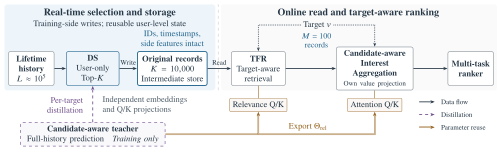
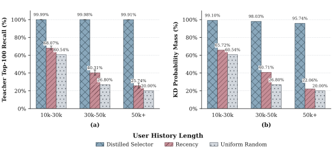
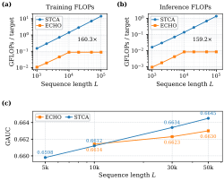

ECHO 是快手提出的三级漏斗：100K 条原始行为 → 用户侧学习式 top-K（不看候选，在请求链路外计算并按用户缓存）选出 10K 条 → 每个候选做 GSU 式检索取 100 条 → target attention 聚合进精排。用户侧选择器没有候选信息，所以用一个“看全历史 + 看候选”的 target attention 教师模型做知识蒸馏，再加一项边界损失，专门把“教师重视但没进 top-K”的行为推过门槛。检索和最终 attention 共用教师的相关性参数，这就是标题里的 Homogeneous Operators。按论文的解析估算，序列分支 FLOPs 比 STCA 低约 160 倍；KuaiRand 评论任务 GAUC 相对最强基线提升 1.520%，线上 7 天 A/B 使用时长 +0.613%。
1. 整体结构：三级漏斗各做什么
这一节回答：100K 条行为如何一步步缩到精排能处理的规模。
先定义四个贯穿全文的术语。
- target attention：以待打分候选为 query、以历史行为为 key/value 的注意力。输出是“与这个候选相关的兴趣向量”。DIN 是代表。
- GSU / ESU：SIM 提出的两阶段长序列建模。GSU（General Search Unit）用轻量打分从长历史里检索少量相关行为。ESU（Exact Search Unit）在这批行为上做完整的 target attention。
- top-K：按分数保留最高的 K 个位置。
- 知识蒸馏（KD）：让学生模型拟合教师模型输出的概率分布。
ECHO 的漏斗有三级，外加一个只在训练时存在的教师。
| 阶段 | 模块 | 输入 → 输出 | 看候选？ | 运行位置 | 训练信号 |
|---|---|---|---|---|---|
| ① 用户侧压缩 | Distilled Selector（DS） | 100K → 10K 条原始记录 | 否 | 实时训练链路，写入中间存储 | KD + 边界损失 |
| ② 候选检索 | TFR，TWIN 式 GSU | 10K → 每候选 100 条 | 是 | 线上请求 | 精排损失；打分参数来自教师 |
| ③ 兴趣聚合 | TWIN 式 ESU | 100 条 → 兴趣向量 | 是 | 线上请求 | 精排多任务损失 |
| 教师 | 全历史 target attention | 全部历史 + 训练候选 | 是 | 仅训练 | 自身预测损失 |
TFR 是 Target-aware Fine-grained Retriever 的缩写，即第二级的候选检索器。
训练时有两张图同时跑。选择器图训练教师和 DS，DS 把每个用户的 top-K 记录写进中间存储。排序图从存储读这些记录，训练 TFR、聚合层和精排。
线上请求只读存储。它不运行 DS，也不碰 100K 全历史。
DS 保留的是原始记录：item ID、时间戳和侧特征。C-Former、SequenceO1 等方法把历史压成潜向量 token；ECHO 的每条保留记录都还能被候选单独匹配。

2. 走查：一次请求如何流过三级（示意数字）
这一节用一个例子把上面的表串起来。以下数字均为示意，非论文数据。
用户 A 有 80,000 条历史行为。凌晨实时训练时，DS 给这 80,000 条各打一个分，保留最高的 10,000 条，写进存储。其中有一条是 8 个月前看完的一个钓鱼视频。
上午 9 点，用户 A 刷新首页。精排要给 500 个候选打分，其中一个候选是新的钓鱼装备视频。
第一级已在请求前完成。精排直接读出用户 A 的 10,000 条记录，500 个候选共用这一份。
第二级：TFR 用钓鱼视频作为 query，给 10,000 条记录打相关性分，取最高的 100 条。8 个月前那条钓鱼视频分数很高，被取了出来。
第三级：target attention 在这 100 条上计算权重。钓鱼相关的行为拿到较大权重，聚合成兴趣向量，送进精排塔预测点击、点赞、评论等目标。
如果 DS 当初没保留那条钓鱼记录，第二级就找不到它。这正是 DS 需要教师监督的原因。
3. 标题关键词对应什么
这一节把标题里的每个词落到上面的模块上。
Cascade（级联）：100K → 10K → 100 → attention 三级预算。10K 决定能保住多宽的兴趣范围。100 决定每个候选的精细计算量。
Homogeneous Operators（同构算子）：TWIN 让 GSU 和 ESU 使用同一套相关性打分参数。ECHO 再往前推一步：教师学到的 query/key 相关性参数 同时导出给 TFR 和最终 target attention。三处使用同一个打分算子，粗检索和精聚合对“相关”的定义一致。
Distillation-Guided（蒸馏引导）：DS 的训练信号来自教师，见第 4 节。
100K-Sequence Modeling：线上原始历史上限 100K 条。
4. DS 怎么训练：打分、蒸馏、边界损失
这一节解决第一级的核心难题：DS 看不到候选，却要提前选出对候选有用的行为。
4.1 DS 的打分
符号： 是学生（DS）给第 条历史行为的分数； 是只由用户画像特征得到的用户向量； 是第 条行为（特征加时间戳）的编码；、 是第 个头的 query/key 投影； 是头数； 是内积。
直觉：这就是一个以“用户”为 query 的注意力打分。因为 query 里没有候选，同一用户的分数对所有候选通用，所以能提前算好并缓存。
打完分后保留最高的 个位置，记为集合 。生产中 。
4.2 教师的打分
符号： 是教师在候选 下给第 条行为的分数； 把上下文特征 和候选特征 编码成 query； 是教师自己的行为编码（与学生不共享）； 是教师头数。
直觉：教师是一个标准的全历史 target attention。它知道候选是什么，所以它的分数代表“对这个候选来说，哪些历史真正相关”。
4.3 蒸馏损失
符号： 是一个 batch， 是其中一个“用户–候选”样本； 是该用户的历史长度； 和 分别是教师和学生分数在历史维度上做 softmax 后的概率，softmax 温度为 ； 表示 stop-gradient，学生损失不会更新教师。
直觉：这是标准的软标签交叉熵。同一用户有多个训练候选，每个候选给出一份教师分布。学生只有一份分数，只能去拟合这些分布的“共同部分”。结果是学生学会把对大多数候选都有用的行为排在前面。
4.4 边界损失
分布对齐之后，仍可能有个别教师很看重的行为排在学生 top-K 之外。边界损失专门处理这类行为。
做法分三步。第一步，用更低的温度 算一份更尖锐的教师分布 。第二步，在学生 top-K 之外，找教师概率最高的 个位置，记为 （漏选的正例）；在 top-K 之内，找教师概率最低的 个位置，记为 （占位的负例）。第三步，按名次两两配对，计算：
符号： 是第 个配对； 是该配对的权重，等于教师对正例和负例的偏好差（小于 0 时取 0）； 是学生分数； 是希望正例领先负例的间隔； 控制损失的尺度； 防止分母为 0。
直觉：这是一个带权的 pairwise 排序损失。它只作用在 top-K 的边界上，把“该进没进”的行为分数往上推，把“占了名额却不重要”的行为往下压。教师偏好差越大，推力越大。配对和权重都不求梯度，所以不需要对离散的 top-K 操作求导。
4.5 总目标
符号： 是教师的多任务预测损失（点击、点赞等标签）；、、 是权重。
直觉： 只更新教师，让教师持续学会“什么相关”； 和 只更新 DS。教师和 DS 在同一条实时训练流里一起训练，教师不是冻结的预训练模型。排序图另用自己的多任务损失 。
5. 部署：三处工程优化
这一节解决漏斗上线后的显存、存储和计算开销。
公共特征共享。 一个 batch 里同一用户的多个样本，只把长历史等用户侧特征加载进 GPU 一次。
紧凑记录编码。 生产 schema 每条记录 8 个字段。全用 int64 是 64 字节一条，10K 条就是 640 KB。ECHO 按每个字段的取值范围分配固定位宽，再紧密打包。
Key 投影挪到 query 侧。 常规 target attention 要给每条历史算一次 key 投影。线上要么每次重算，要么缓存投影结果，开销都随历史长度增长。ECHO 用一个内积恒等式：
符号： 是候选侧 query 向量； 是一条历史行为向量；、 是 query/key 投影矩阵； 是 的转置。
直觉：先把 乘到 query 上，每个请求只做一次。历史向量 直接参与内积，不再需要逐条投影，也不需要 key 缓存。
6. 实验
这一节回答三个问题：效果比基线好多少、DS 选得准不准、省了多少计算。
基线定义。 DIN：只用最近 100 条行为的 target attention。SIM：GSU/ESU 两阶段检索。TWIN：GSU 和 ESU 共用相关性参数的 SIM 改进版。STCA：堆叠 target-aware cross-attention 的端到端长序列模型，训练平均 2K、推理外推到 10K。TWIN V2：把最近 50K 行为聚类成约 10K 个单元再做 attention。SequenceO1：把历史压成 100 个 token 的固定 sketch。GAUC 是按用户分组计算 AUC 后加权平均。
| 结果 | 数字 | 含义 |
|---|---|---|
| KuaiRand-1K 评论 GAUC | 0.6252 → 0.6347（+1.520%，最强基线 SequenceO1） | 公开数据上提升最大的任务；8 个任务全部最优 |
| 工业数据 评论 GAUC | 0.7824 → 0.7851（+0.345%，最强基线 TWIN V2） | 工业数据上提升 0.113%–0.345% |
| 按历史长度（对比 TWIN） | <10K 用户 +0.045%，>50K 用户 +1.279% | 历史越长，学习式选择越有用 |
| 教师 top-100 召回 | DS 99.976%，最近截断 57.905%，随机 49.443% | DS 几乎没漏掉教师最看重的行为 |
| 选出的旧行为 | 46.08% 不在最近 10K 条内 | DS 选的不是“最近的”，而是“相关的” |
| 序列分支 FLOPs（L=100K） | 训练 160.3×，推理 159.2× 低于 STCA | 解析估算，仅序列分支，未报端到端延迟 |
| 长历史精度（50K） | STCA 0.6645，ECHO 0.6630 | 全量建模仍略优，ECHO 用约 1/160 计算拿到大部分收益 |
| 消融：去掉 KD 和边界损失 | 评论 0.6200 → 0.6347（+2.371%） | 教师监督是 DS 有效的关键 |
| 线上 A/B（7 天，5% 流量） | 总使用时长 +0.613%，人均 +0.640% | 对照组已含 TWIN 和类 SequenceO1 压缩，是增量收益 |
1.520% 是相对值：，绝对差 0.0095。
消融同时去掉了两项损失，边界损失单独的贡献论文没有拆开。


7. 局限
这一节说明漏斗第一级带来的代价。
100K → 10K 是硬截断。被 DS 丢掉的行为，第二级 TFR 无法再取回。作者指出，极长尾候选的相关行为可能因此丢失。
DS 随实时训练和存储刷新而更新。新兴趣要等下一次刷新才能进入保留集。
论文没有单独评估新用户、兴趣突变和新增候选类型下的保留质量。工业数据不公开。
8. 工业实践建议
这一节给已有长序列链路的团队几个可直接做的事。
在 GSU 前加一级用户侧 top-K。 已有 SIM/TWIN 链路时，同样存储预算下对比学习式选择、最近截断和随机。
监控保留集质量。 离线跟踪“教师 top-100 召回”和“教师 attention 质量覆盖率”。
复用现有模型做教师。 已有全历史或长窗口 target attention 模型，可以兼任教师，并把 query/key 参数导出给 GSU 和 ESU。
单独使用 key 投影技巧。 第 5 节的恒等式适用于任何线上 target attention。
定义刷新指标。 跟踪新行为进入 top-K 的延迟、模型版本与存储记录的兼容性，以及回滚方案。
原文：https://arxiv.org/html/2610.28569v1 。数字与公式取自论文；走查中的数字为示意，实践建议为本文分析。